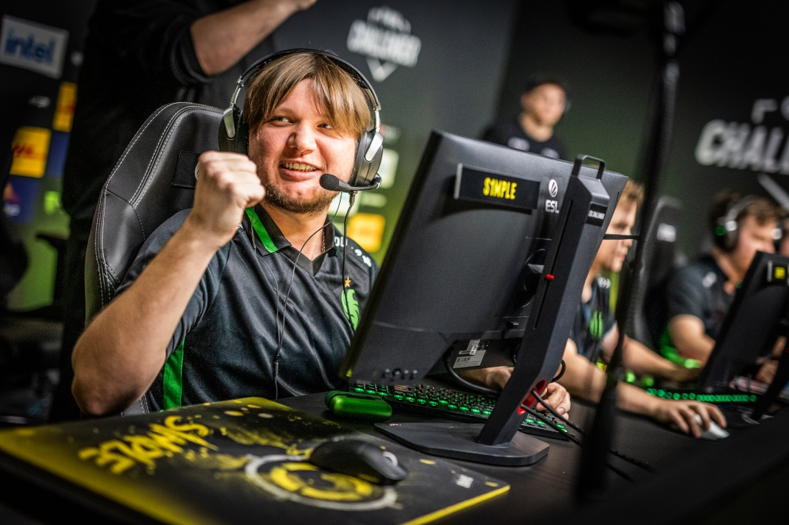
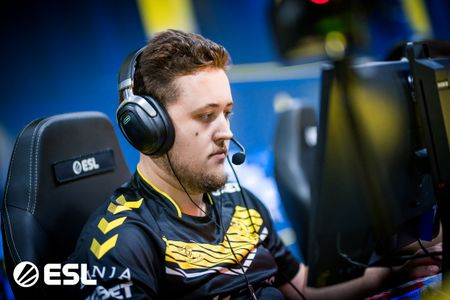
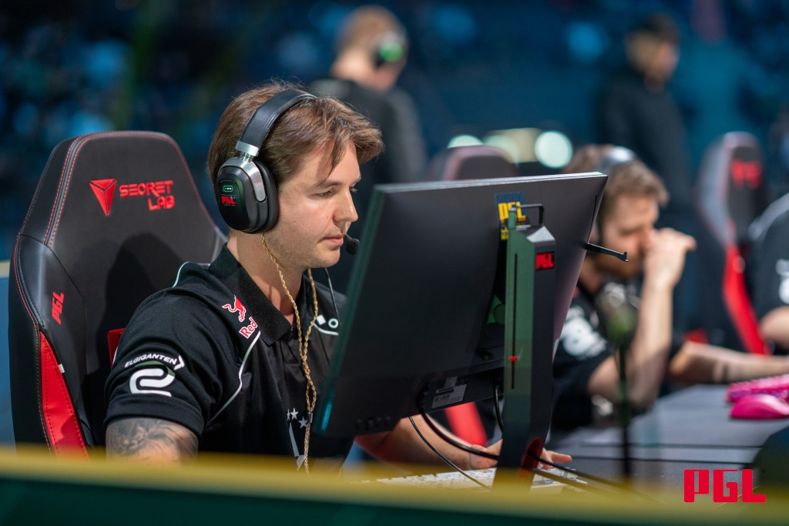
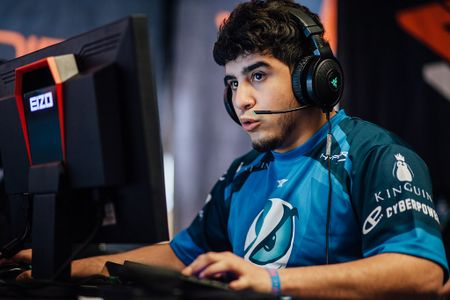
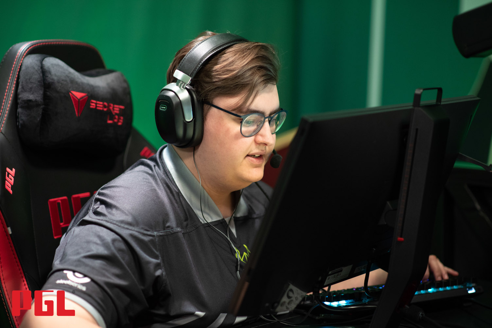
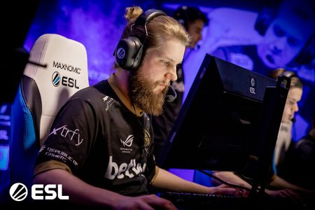
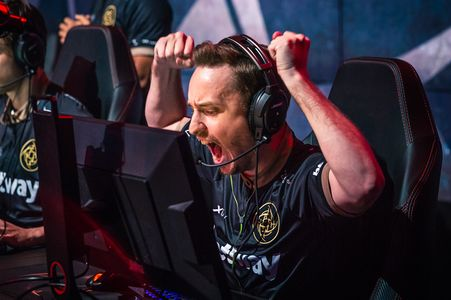
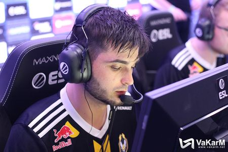
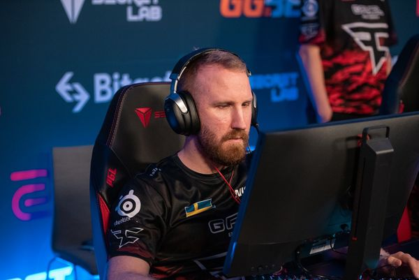

A valaha volt 10 legjobb Counter-Strike játékos
A Counter-Strike történelme során rengeteg legendás játékos tűnt fel, akik nevükkel örökre beírták magukat az esport történelemkönyvébe. Az alábbi lista szubjektív, de közmegegyezés szerint a következő 10 játékos számít a valaha volt legjobbak közé, figyelembe véve eredményeket, dominanciát és közösségi hatást.
- 1. s1mple (Oleksandr Kostyliev) – A NaVi ukrán játékosa, CS:GO korszak kiemelkedő alakja. 
- 2. ZywOo (Mathieu Herbaut) – Fiatal francia csodagyerek, a Vitality húzóembere. 
- 3. dev1ce (Nicolai Reedtz) – A dán Astralis kulcsjátékosa, többszörös Major-győztes. 
- 4. coldzera (Marcelo David) – Brazil sztárjátékos, aki a SK Gaming fénykorában uralta a mezőnyt. 
- 5. NiKo (Nikola Kovač) – A bosnyák géniusz, híres AWP és rifle skilljeiről is. 
- 6. f0rest (Patrik Lindberg) – CS 1.6 és CS:GO legendás svéd játékosa, töretlen karrierrel. 
- 7. GeT_RiGhT (Christopher Alesund) – A lurkerek királya, a NiP ikonikus tagja. 
- 8. shox (Richard Papillon) – Francia veterán, több korszakban is top szinten játszott. 
- 9. kennyS (Kenny Schrub) – Az AWP művésze, Vitality és G2 korábbi játékosa.
- 10. olofmeister (Olof Kajbjer) – A Fnatic sikerkorszakának egyik meghatározó alakja. 

Természetesen a lista tovább bővíthető, hiszen a Counter-Strike világában évről évre új tehetségek törnek elő. A következő oldalon a jelenlegi aktív topjátékosok beállításait ismerheted meg!